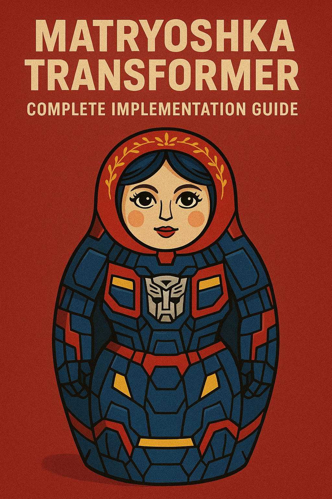

Matryoshka Transformer: Complete Implementation Guide

Introduction
Matryoshka Transformers are a neural architecture that enables flexible computational budgets during inference by allowing early exits at different layers. Named after Russian nesting dolls, these models contain multiple “nested” representations of decreasing complexity, allowing you to trade off accuracy for speed based on your computational constraints.
Key Concepts
Core Ideas
- Nested Representations: Each layer can potentially serve as a final output
- Early Exits: Inference can stop at any intermediate layer
- Adaptive Computation: Different inputs may require different amounts of computation
- Training Efficiency: Single model training for multiple computational budgets
Architecture Overview
Input → Layer 1 → [Exit 1] → Layer 2 → [Exit 2] → ... → Layer N → [Final Exit]Implementation
1. Basic Matryoshka Transformer Block
import torch
import torch.nn as nn
import torch.nn.functional as F
from typing import List, Optional, Tuple
class MatryoshkaTransformerBlock(nn.Module):
"""
A single transformer block with optional early exit capability
"""
def __init__(
self,
d_model: int,
n_heads: int,
d_ff: int,
dropout: float = 0.1,
has_exit: bool = False,
n_classes: Optional[int] = None
):
super().__init__()
# Standard transformer components
self.attention = nn.MultiheadAttention(
d_model, n_heads, dropout=dropout, batch_first=True
)
self.feed_forward = nn.Sequential(
nn.Linear(d_model, d_ff),
nn.ReLU(),
nn.Dropout(dropout),
nn.Linear(d_ff, d_model)
)
self.norm1 = nn.LayerNorm(d_model)
self.norm2 = nn.LayerNorm(d_model)
self.dropout = nn.Dropout(dropout)
# Early exit components
self.has_exit = has_exit
if has_exit and n_classes is not None:
self.exit_classifier = nn.Sequential(
nn.LayerNorm(d_model),
nn.Linear(d_model, d_model // 2),
nn.ReLU(),
nn.Dropout(dropout),
nn.Linear(d_model // 2, n_classes)
)
def forward(
self,
x: torch.Tensor,
mask: Optional[torch.Tensor] = None
) -> Tuple[torch.Tensor, Optional[torch.Tensor]]:
"""
Forward pass with optional early exit
Returns:
x: Transformed input
exit_logits: Early exit predictions (if has_exit=True)
"""
# Self-attention
attn_out, _ = self.attention(x, x, x, attn_mask=mask)
x = self.norm1(x + self.dropout(attn_out))
# Feed-forward
ff_out = self.feed_forward(x)
x = self.norm2(x + self.dropout(ff_out))
# Early exit prediction
exit_logits = None
if self.has_exit:
# Use mean pooling for sequence classification
pooled = x.mean(dim=1) # [batch_size, d_model]
exit_logits = self.exit_classifier(pooled)
return x, exit_logits2. Complete Matryoshka Transformer Model
class MatryoshkaTransformer(nn.Module):
"""
Complete Matryoshka Transformer with multiple exit points
"""
def __init__(
self,
vocab_size: int,
d_model: int = 512,
n_heads: int = 8,
n_layers: int = 6,
d_ff: int = 2048,
max_seq_len: int = 512,
n_classes: int = 2,
dropout: float = 0.1,
exit_layers: List[int] = None # Layers with early exits
):
super().__init__()
self.d_model = d_model
self.n_layers = n_layers
# Default exit layers (every 2 layers + final)
if exit_layers is None:
exit_layers = list(range(1, n_layers, 2)) + [n_layers - 1]
self.exit_layers = set(exit_layers)
# Embeddings
self.token_embedding = nn.Embedding(vocab_size, d_model)
self.position_embedding = nn.Embedding(max_seq_len, d_model)
self.dropout = nn.Dropout(dropout)
# Transformer blocks
self.blocks = nn.ModuleList([
MatryoshkaTransformerBlock(
d_model=d_model,
n_heads=n_heads,
d_ff=d_ff,
dropout=dropout,
has_exit=(i in self.exit_layers),
n_classes=n_classes
)
for i in range(n_layers)
])
# Final classifier (always present)
self.final_classifier = nn.Sequential(
nn.LayerNorm(d_model),
nn.Linear(d_model, n_classes)
)
# Confidence thresholds for early exits
self.confidence_thresholds = nn.Parameter(
torch.full((len(self.exit_layers),), 0.8)
)
def forward(
self,
input_ids: torch.Tensor,
attention_mask: Optional[torch.Tensor] = None,
return_all_exits: bool = False,
confidence_threshold: float = 0.8,
max_exit_layer: Optional[int] = None
) -> dict:
"""
Forward pass with adaptive early exiting
Args:
input_ids: Input token IDs [batch_size, seq_len]
attention_mask: Attention mask [batch_size, seq_len]
return_all_exits: Whether to return predictions from all exit points
confidence_threshold: Minimum confidence for early exit
max_exit_layer: Maximum layer to exit at (for budget constraints)
Returns:
Dictionary containing predictions and exit information
"""
batch_size, seq_len = input_ids.shape
# Embeddings
positions = torch.arange(seq_len, device=input_ids.device).unsqueeze(0)
x = self.token_embedding(input_ids) + self.position_embedding(positions)
x = self.dropout(x)
# Prepare attention mask
if attention_mask is not None:
# Convert to transformer format
attn_mask = attention_mask.unsqueeze(1).unsqueeze(2)
attn_mask = (1.0 - attn_mask) * -10000.0
attn_mask = attn_mask.squeeze(1).squeeze(1)
else:
attn_mask = None
# Track exits
exit_predictions = []
exit_confidences = []
exit_layer = None
# Forward through transformer blocks
for i, block in enumerate(self.blocks):
x, exit_logits = block(x, attn_mask)
# Check for early exit
if exit_logits is not None:
exit_probs = F.softmax(exit_logits, dim=-1)
max_confidence = torch.max(exit_probs, dim=-1)[0]
exit_predictions.append(exit_logits)
exit_confidences.append(max_confidence)
# Early exit decision
if not return_all_exits:
if max_exit_layer is None or i <= max_exit_layer:
if torch.mean(max_confidence) >= confidence_threshold:
exit_layer = i
break
# Final prediction
final_output = self.final_classifier(x.mean(dim=1))
return {
'logits': final_output,
'exit_predictions': exit_predictions,
'exit_confidences': exit_confidences,
'exit_layer': exit_layer,
'total_layers_used': (exit_layer + 1) if exit_layer is not None else self.n_layers
}3. Training Strategy
class MatryoshkaTrainer:
"""
Training strategy for Matryoshka Transformers
"""
def __init__(
self,
model: MatryoshkaTransformer,
exit_loss_weights: List[float] = None,
distillation_weight: float = 0.5
):
self.model = model
self.exit_loss_weights = exit_loss_weights or [0.3, 0.3, 1.0] # Increasing weights
self.distillation_weight = distillation_weight
def compute_loss(
self,
outputs: dict,
labels: torch.Tensor,
temperature: float = 3.0
) -> dict:
"""
Compute combined loss from all exit points
"""
losses = {}
total_loss = 0
# Final layer loss
final_loss = F.cross_entropy(outputs['logits'], labels)
losses['final'] = final_loss
total_loss += final_loss
# Early exit losses
if outputs['exit_predictions']:
for i, (exit_logits, weight) in enumerate(
zip(outputs['exit_predictions'], self.exit_loss_weights)
):
# Classification loss
exit_loss = F.cross_entropy(exit_logits, labels)
losses[f'exit_{i}'] = exit_loss
total_loss += weight * exit_loss
# Knowledge distillation from final layer
if self.distillation_weight > 0:
distill_loss = F.kl_div(
F.log_softmax(exit_logits / temperature, dim=-1),
F.softmax(outputs['logits'] / temperature, dim=-1),
reduction='batchmean'
) * (temperature ** 2)
losses[f'distill_{i}'] = distill_loss
total_loss += self.distillation_weight * weight * distill_loss
losses['total'] = total_loss
return losses
def train_step(
self,
batch: dict,
optimizer: torch.optim.Optimizer
) -> dict:
"""
Single training step
"""
self.model.train()
optimizer.zero_grad()
# Forward pass
outputs = self.model(
input_ids=batch['input_ids'],
attention_mask=batch['attention_mask'],
return_all_exits=True
)
# Compute loss
losses = self.compute_loss(outputs, batch['labels'])
# Backward pass
losses['total'].backward()
optimizer.step()
return {k: v.item() for k, v in losses.items()}4. Inference with Adaptive Computation
class AdaptiveInference:
"""
Adaptive inference with configurable exit strategies
"""
def __init__(self, model: MatryoshkaTransformer):
self.model = model
def predict_with_budget(
self,
input_ids: torch.Tensor,
attention_mask: Optional[torch.Tensor] = None,
flop_budget: float = 1.0, # Fraction of full model FLOPs
confidence_threshold: float = 0.8
) -> dict:
"""
Predict with computational budget constraint
"""
max_layer = int(self.model.n_layers * flop_budget) - 1
outputs = self.model(
input_ids=input_ids,
attention_mask=attention_mask,
confidence_threshold=confidence_threshold,
max_exit_layer=max_layer
)
# Calculate actual computation used
layers_used = outputs['total_layers_used']
actual_budget = layers_used / self.model.n_layers
return {
**outputs,
'computational_savings': 1.0 - actual_budget,
'flops_used': actual_budget
}
def predict_with_latency_constraint(
self,
input_ids: torch.Tensor,
attention_mask: Optional[torch.Tensor] = None,
max_latency_ms: float = 100.0
) -> dict:
"""
Predict with latency constraint (simplified)
"""
# This is a simplified version - in practice, you'd profile
# actual inference times for different exit points
estimated_time_per_layer = 10.0 # ms
max_layers = int(max_latency_ms / estimated_time_per_layer)
return self.predict_with_budget(
input_ids=input_ids,
attention_mask=attention_mask,
flop_budget=max_layers / self.model.n_layers
)5. Usage Example
# Initialize model
model = MatryoshkaTransformer(
vocab_size=30000,
d_model=512,
n_heads=8,
n_layers=12,
n_classes=2,
exit_layers=[2, 5, 8, 11] # Exit points
)
# Training setup
trainer = MatryoshkaTrainer(model)
optimizer = torch.optim.Adam(model.parameters(), lr=1e-4)
# Training loop (simplified)
for batch in dataloader:
losses = trainer.train_step(batch, optimizer)
print(f"Total loss: {losses['total']:.4f}")
# Inference
inference_engine = AdaptiveInference(model)
# Example: Predict with 50% computational budget
result = inference_engine.predict_with_budget(
input_ids=sample_input,
flop_budget=0.5,
confidence_threshold=0.85
)
print(f"Prediction: {result['logits'].argmax(-1)}")
print(f"Computational savings: {result['computational_savings']:.2%}")
print(f"Exited at layer: {result['exit_layer']}")Advanced Features
1. Dynamic Confidence Thresholds
class DynamicThresholdStrategy:
"""
Dynamically adjust confidence thresholds based on input characteristics
"""
def __init__(self, base_threshold: float = 0.8):
self.base_threshold = base_threshold
def get_threshold(self, input_ids: torch.Tensor, layer: int) -> float:
"""
Compute dynamic threshold based on input and layer
"""
# Example: Lower threshold for longer sequences
seq_len = input_ids.shape[1]
length_factor = 1.0 - (seq_len - 50) / 500 # Adjust based on length
# Example: Higher threshold for earlier layers
layer_factor = 1.0 + (0.1 * (6 - layer)) # Stricter for early exits
return self.base_threshold * length_factor * layer_factor2. Ensemble Early Exits
class EnsembleMatryoshka(nn.Module):
"""
Ensemble multiple exit predictions for better accuracy
"""
def __init__(self, base_model: MatryoshkaTransformer):
super().__init__()
self.base_model = base_model
self.ensemble_weights = nn.Parameter(torch.ones(len(base_model.exit_layers) + 1))
def forward(self, input_ids: torch.Tensor, **kwargs) -> dict:
outputs = self.base_model(input_ids, return_all_exits=True, **kwargs)
# Ensemble all available predictions
all_logits = outputs['exit_predictions'] + [outputs['logits']]
weights = F.softmax(self.ensemble_weights, dim=0)
ensemble_logits = sum(w * logits for w, logits in zip(weights, all_logits))
return {
**outputs,
'ensemble_logits': ensemble_logits
}Performance Optimization Tips
- Layer Selection: Choose exit layers strategically - too many exits can hurt training
- Loss Weighting: Start with lower weights for early exits, increase gradually
- Confidence Calibration: Use temperature scaling to calibrate exit confidences
- Batch Processing: Process samples with similar complexity together
- Caching: Cache intermediate representations for multiple exit strategies
Conclusion
Matryoshka Transformers offer a powerful way to build efficient models that can adapt their computational cost at inference time. The key to success is careful tuning of exit strategies, loss weights, and confidence thresholds for your specific use case.
This implementation provides a solid foundation that you can extend with additional features like cascaded exits, uncertainty estimation, or task-specific adaptations.